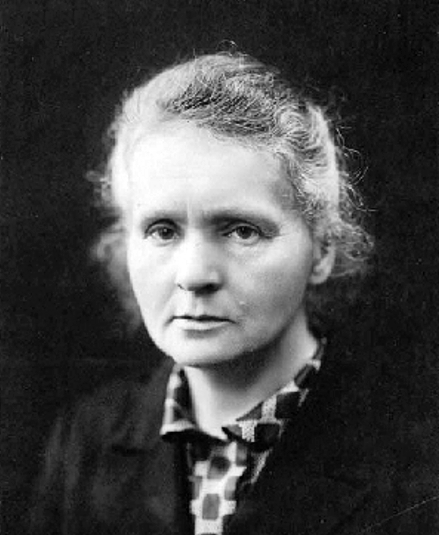

Marie Curie
la première femme à avoir reçu le prix Nobel

Portrait de Marie Curie en 1920
La vie de Marie Skłodowska-Curie
1867 - née en Pologne
1891 - elle s'inscrit pour des études de physique à la faculté des sciences de Paris
1893 - obtient sa licence en sciences physiques
1898 - obtient le prix Gegner11 de l'Académie des sciences
1898 - annonce la découverte du polonium
1802 - obtient un décigramme de chlorure de radium
1903 - partagent avec Henri Becquerel le prix Nobel de physique de 1903 pour leurs recherches sur les radiations
1903 - avec son mari, de la médaille Davy pour ses travaux sur le radium
1911 - obtient le prix Nobel de chimie pour ses travaux sur le polonium et le radium